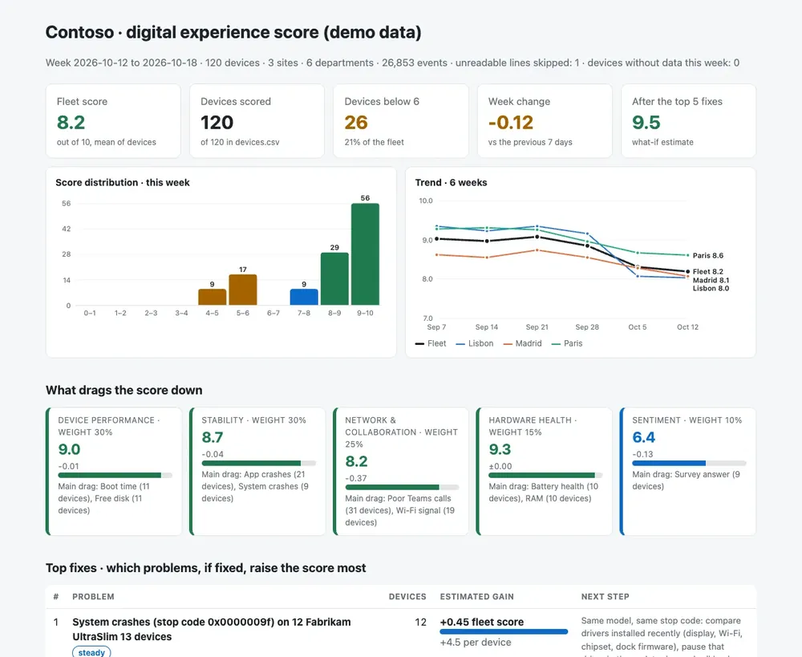

In a made-up company with 120 devices in three cities, the top problem is blue screens on one laptop model after a driver update. It is the first of five problems placed on purpose that the lab published with this post finds in six weeks of fictional data. The lab turns endpoint telemetry, the data each device records about itself, into a 0 to 10 score per device, site and department.
Tickets show only a fraction of the problems. People live with a slow laptop for weeks and just say "IT is slow". A monthly update adds 40 seconds to every logon or an Outlook add-in crashes on twenty laptops, and telemetry sees it.
What lowers a device's DEX score: five categories, blue screens cap it and missing data never counts as zero
A read-only PowerShell collector gathers boot and logon times, app crashes, blue screens, Wi-Fi, latency, VPN failures, battery and disk. The score combines performance, stability, network and collaboration, hardware and an optional survey. Blue screens and very poor categories cap it, and missing data is left out, never scored as zero.
The lab ranks fixes by how much the fleet score would rise if each problem were gone and shows a 6-week trend by site. Every point lost has to lead to a cause and a fix.
How to use it with real data
The collector can go out through an Intune remediation script or an RMM tool, with thresholds tuned after a few weeks. Telemetry linked to a person is personal data, so the first step is talking to the data protection officer and reporting by site and department.
Where it comes from
It is a lab built on years of supporting Windows users and executives on site, inspired by public descriptions of digital employee experience (DEX) tools such as Nexthink. The model, thresholds and weights are my own and are explained in the repository.
Want to bring it to your environment or adapt it to your case? Get in touch and we can look at it together.
Tech Career Lab · newsletter
Found this useful? Every two weeks I send one practical idea for IT professionals: LinkedIn, projects, networking and hiring processes.
Sign up and get the 33 ideas →